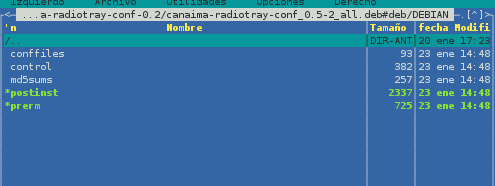

Para continuar con los artículos de metaempaquetado para Debian/Canaima, el último artículo sobre la herramienta equivs.
Lo que faltaba por hacer era crear un metapaquete de configuración que copie archivos de configuración del escritorio cuando se instala y que se guarde dichas configuraciones en el directorio /etc/skel para cuando se cree un nuevo usuario en el sistema.
En el tutorial de Ubuntu Forums explican como crear el metapaquete con archivos postinst y prerm, el problema es que los archivos de ejemplo no se encuentran en los enlaces que hacen referencia.
La idea es agregar el applet del programa radiotray en el escritorio de gnome para todos los usuarios. Como normalmente ya se tiene usuarios en el equipo, se tendrá que copiar los archivos de configuración de radiotray al directorio home de cada usuario; para los usuarios que se creen luego de la instalación del metapaquete el sistema copiará los archivos de configuración que se encuentran en el directorio /etc/skel/ .
Lo primero que se necesita hacer es crear el archivo control para metaempaquetado de equivs con el comando equivs-control:
$equivs-control canaima-radiotray-conf
Este archivo contendrá:
Section: misc
Priority: optional
Homepage: http://canaima.softwarelibre.gob.ve
Standards-Version: 3.9.1
Package: canaima-radiotray-conf
Version: 0.1
Maintainer: Ernesto Nadir Crespo Avila <ecrespo@cenditel.gob.ve>
Pre-Depends: radiotray
Depends: ${misc:Depends}
Architecture: all
Copyright: copyright
Changelog: changelog
Files: ./radiotray/radiotray.desktop /etc/skel/.config/autostart/radiotray.desktop
./radiotray/bookmarks.xml /etc/skel/.local/share/radiotray/bookmarks.xml
File: postinst
#!/bin/sh -e
# preinst for main-package-config. Divert some configuration file of main-package.
.
set -e
.
PKG=canaima-radiotray-conf
.
if [ "$1" = configure ] ; then
.
for usuario in /home/*? ; do
.
usuario_min=$(basename $usuario)
.
case $(grep "${usuario_min}:.*:.*:.*:.*:.*:::" /etc/shadow ) in
.
'')
#no se hace nada
;;
.
*)
usuario=${usuario_min}
.
if [ -f /home/${usuario}/.config/autostart/radiotray.desktop ];
.
then
.
cp -r /etc/skel/.config/autostart/radiotray.desktop /home/${usuario}/.config/autostart/radiotray.desktop
.
chown ${usuario}.${usuario} /home/${usuario}/.config/autostart/radiotray.desktop
else
.
mkdir -p /home/${usuario}/.config; chown -R ${usuario}.${usuario} /home/${usuario}/.config
.
mkdir -p /home/${usuario}/.config/autostart; chown -R ${usuario}.${usuario} /home/${usuario}/.config/autostart
.
cp -r /etc/skel/.config/autostart/radiotray.desktop /home/${usuario}/.config/autostart/radiotray.desktop
.
chown ${usuario}.${usuario} /home/${usuario}/.config/autostart/radiotray.desktop
.
fi
.
if [ -f /home/${usuario}/.local/share/radiotray/bookmarks.xml ];
.
then
.
cp -r /etc/skel/.local/share/radiotray/bookmarks.xml /home/${usuario}/.local/share/radiotray/bookmarks.xml
.
chown ${usuario}.${usuario} /home/${usuario}/.local/share/radiotray/bookmarks.xml
.
else
.
mkdir -p /home/${usuario}/.local; chown -R ${usuario}.${usuario} /home/${usuario}/.local
.
mkdir -p /home/${usuario}/.local/share; chown -R ${usuario}.${usuario} /home/${usuario}/.local/share
.
mkdir -p /home/${usuario}/.local/share/radiotray; chown -R ${usuario}.${usuario} /home/${usuario}/.local/share/radiotray
.
cp -r /etc/skel/.local/share/radiotray/bookmarks.xml /home/${usuario}/.local/share/radiotray/bookmarks.xml
.
chown ${usuario}.${usuario} /home/${usuario}/.local/share/radiotray/bookmarks.xml
.
fi
.
esac
.
done
.
fi
.
exit 0
File: prerm
#!/bin/sh -e
.
set -e
.
PKG=canaima-radiotray-conf
.
if [ "$1" = configure ] ; then
.
for usuario in /home/*? ; do
.
usuario_min=$(basename $usuario)
.
case $(grep "${usuario_min}:.*:.*:.*:.*:.*:::" /etc/shadow ) in
.
'')
#no se hace nada
;;
.
*)
usuario=${usuario_min}
.
if [ -f /home/${usuario}/.config/autostart/radiotray.desktop ];
.
then
.
rm -f /home/${usuario}/.config/autostart/radiotray.desktop
.
fi
.
if [ -f /home/${usuario}/.local/share/radiotray/bookmarks.xml ];
.
then
.
rm -f /home/${usuario}/.local/share/radiotray/bookmarks.xml
.
fi
.
esac
.
done
.
fi
.
exit 0
Description: Radiotray bookmarks to Venezuelan radio streaming
Radiotray config to autostart in gnome and radio stream bookmark
Se define la sección y prioridad del programa, se define el sitio del programa, la versión del policy a utilizar; el nombre del programa, su versión, el mantenedor del programa, la predependencia en este caso es el programa radiotray.
La dependencia es ${misc:Depends}, esta variable se define ya que se está usando debhelper para empaquetar. La arquitectura es allí, se definen los archivos copyright y changelog.
Luego con la opción Files se definen los archivos que se van a copiar en el directorio /etc/skel/ .
Con la opción File se define cada script que se desea agregar al paquete, en este caso los archivos postinst y prerm.
Lo que hace postinst es averiguar las cuentas de los usuarios del equipo y copiar los archivos de configuración en los directorios que usa gnome para manejar las configuraciones. En el caso de prerm lo que hace es borrar dichos archivos de cada usuario del equipo.
Por último se da una descripción corta y luego larga del programa.
El archivo changelog tendrá los cambios realizados en el metapaquete:
canaima-radiotray-conf (1:0.1) unstable; urgency=low
* First release.
-- Ernesto Nadir Crespo Avila <ecrespo@cenditel.gob.ve> Fri, 23 Dec 2011 10:57:05 -0430
El archivo copyright contendrá lo siguiente:
Authors:
Copyright (C) 2011 Ernesto Nadir Crespo Avila <ecrespo@cenditel.gob.ve>
License:
This package is free software; you can redistribute it and/or modify
it under the terms of the GNU General Public License as published by
the Free Software Foundation; version 2 dated June, 1991.
This package is distributed in the hope that it will be useful,
but WITHOUT ANY WARRANTY; without even the implied warranty of
MERCHANTABILITY or FITNESS FOR A PARTICULAR PURPOSE. See the
GNU General Public License for more details.
You should have received a copy of the GNU General Public License
along with this program; if not, write to the Free Software
Foundation, Inc., 51 Franklin St, Fifth Floor, Boston, MA 02110-1301 USA
On Debian GNU/Linux systems, the complete text of the GNU General
Public License can be found in `/usr/share/common-licenses/GPL-2'.
Se crea el directorio radiotray que contendrá los archivos de configuración:
$mkdir radiotray
Se crean los archivos bookmarks.xml y radiotray.desktop. El primero define las radios por Internet que se quieren tener en los favoritos y el segundo archivo define que el programa radiotray se coloque como un applet en el escritorio Gnome.
Archivo bookmarks.xml. El contenido de este archivo se muestra en la siguiente figura:

Archivo radiotray.desktop:
[Desktop Entry]
Type=Application
Exec=radiotray
Hidden=false
X-GNOME-Autostart-enabled=true
Name[es_VE]=radiotray
Name=radiotray
Comment[es_VE]=Cliente de radio por internet
Comment=Cliente de radio por internet
Equivs toma la definición de archivos (File) y crea los archivos para el proceso de instalación. En la siguiente figura se muestra la estructura de archivos del directorio DEBIAN dentro del paquete deb:

Al subir el metapaquete a un repositorio e instalar se puede ver en la siguiente figura las radios que aparecen en favoritos de radiotray:

¡Haz tu donativo! Si te gustó el artículo puedes realizar un donativo con Bitcoin (BTC) usando la billetera digital de tu preferencia a la siguiente dirección: 17MtNybhdkA9GV3UNS6BTwPcuhjXoPrSzV
O Escaneando el código QR desde la billetera:

Comments !